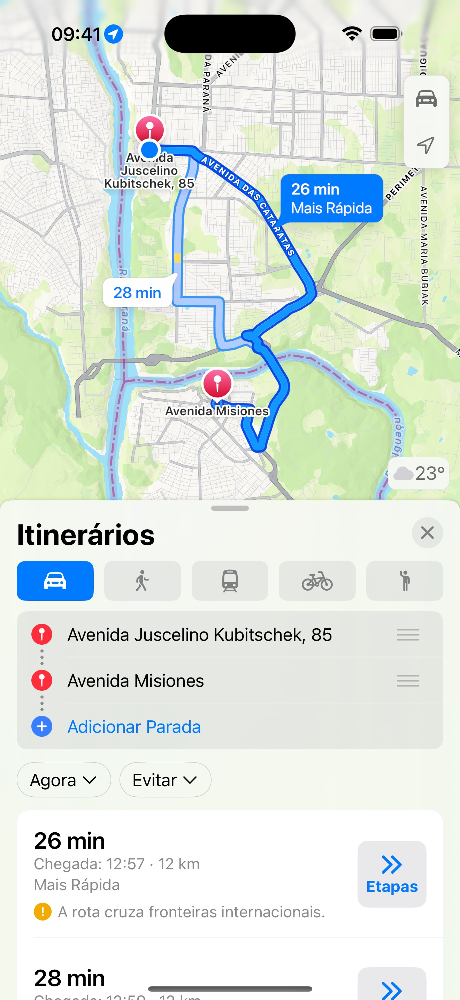
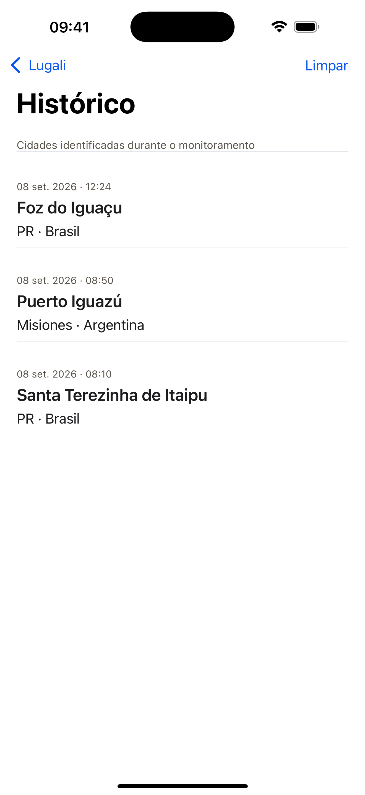

Um aplicativo simples para matar uma curiosidade na viagem: em que cidade estamos agora?
Cada cidade, no momento certo.
Mostra cidade, estado e país, sem sair do aplicativo de mapas.
Continue a rota. A cidade aparece.
Receba um aviso discreto sem sair do aplicativo de mapas.

Sua viagem, cidade por cidade.
Relembre os lugares identificados durante o caminho.
